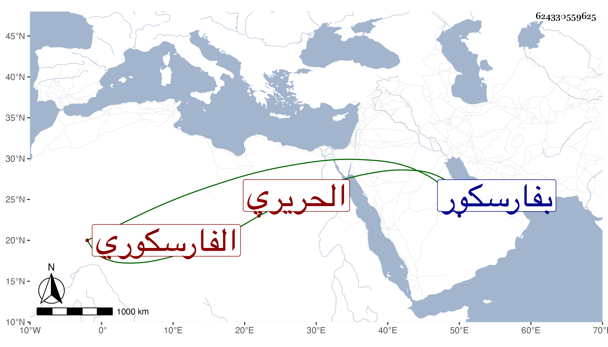

0902Sakhawi.DawLamic.ITO20230111-ara1.EIS1600.624330559625
Biography ID: 624330559625
354
حجاج بن عبد الله بن عبد الرحمن الفارسكوري الحريري . ولد بعد سنة خمس عشرة وثمانمائة تقريبا بفارسكور وقرأ بها القرآن واشتغل في النحو على يوسف البلان الآتي ، ولقيه البقاعي وابن فهد فكتبا عنه في شعبان سنة ثمان وثلاثين وثمانمائة من نظمه .
| هب النسيم سرى في غيهب الغسق | على الأزاهر ماس الغصن بالورق |
| وأيقظ الورق مثل الغصن في سحر | هبت به نسمة تحيي لمنتشق |
في أبيات ، وهو حلو النظم بلا تكلف وإن كان غيره أشبه منه في العربية ، وتأخر إلى بعد سنة أربع وتسعين .
